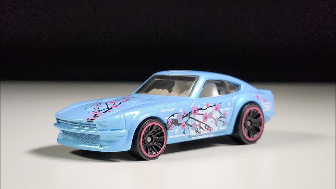
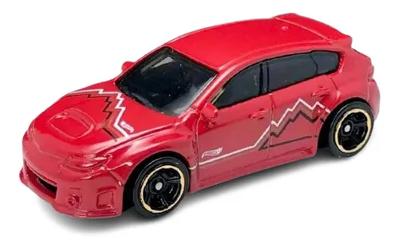
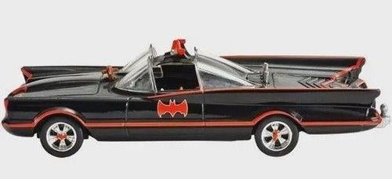
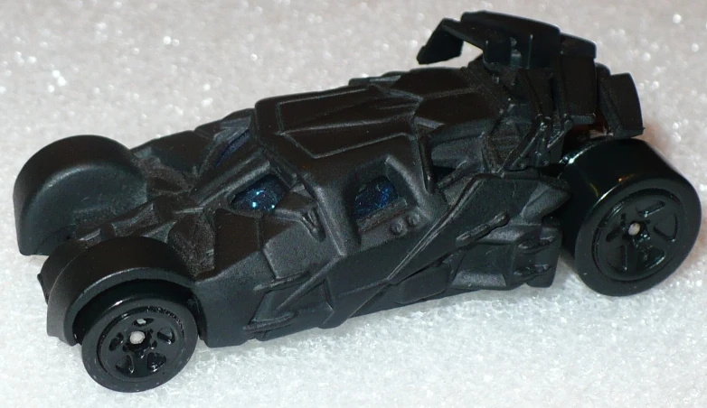
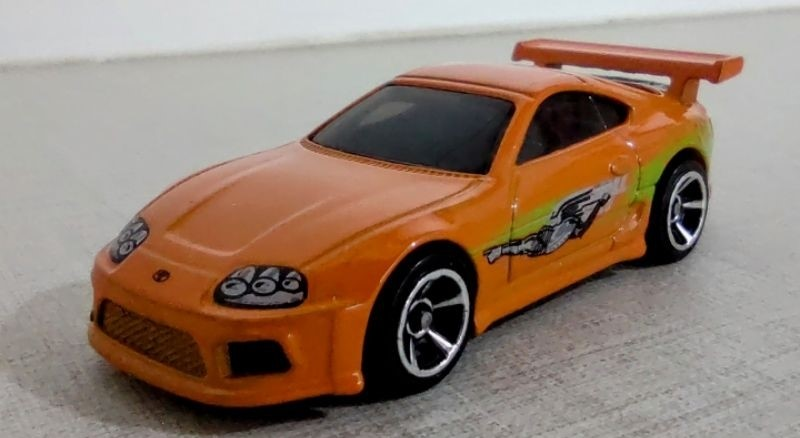
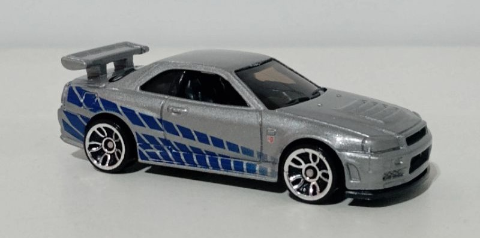
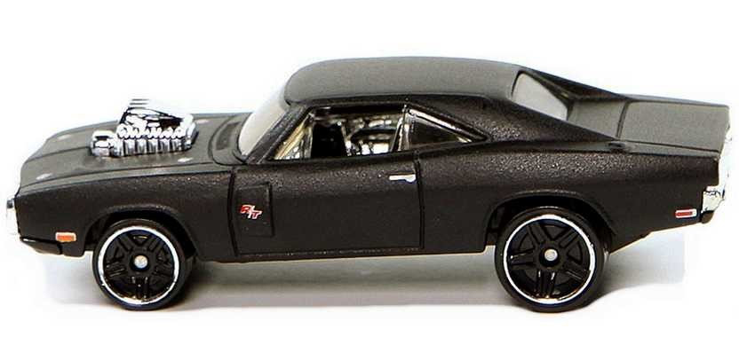
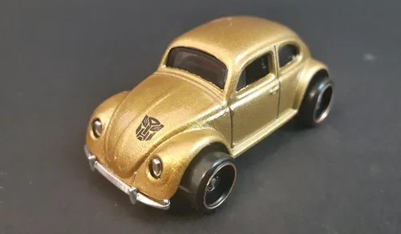
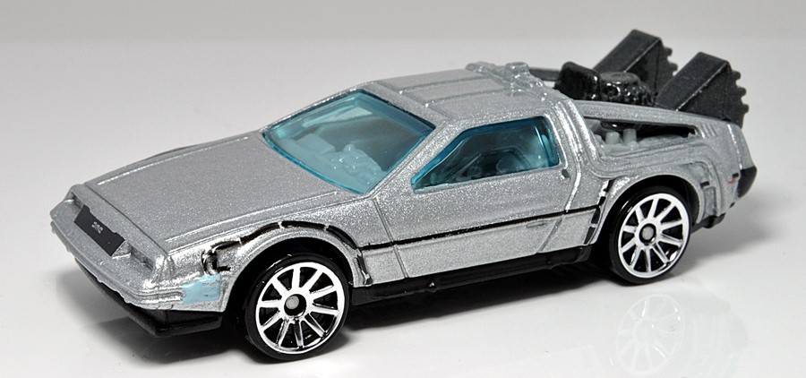

Datsun 240Z

O Datsun 240Z, ou Nissan Fairlady Z, é um carro esportivo japonês lançado pela Nissan nos EUA em 1969
Datsun 510 wagon

A Datsun 510 Wagon é automóvel japonês que faz parte da série Datsun Bluebird, lançado pela Nissan em 1968
Datsun Summer truck

O Datsun Sunny Truck B120 é um pick-up de estética única, A família Sunny da Nissan foi lançada em 1967
Subaru Brz

Subaru BRZ começou em 2012 como um projeto junto á Toyota para criar um cupê esportivo acessível com tração traseira
Subaru WRX STI

O Subaru WRX começou em 1992 no Japão com essa sendo sua Quarta Geração (VA) evoluindo para a plataforma VA
Subaru impreza 22b

O Subaru Impreza 22B é um icónico carro esportivo produzido em número limitado em 1998, com 424 unidades.
BMW 635 CSI

O BMW 635 CSi E24 produzida de 1978 a 1989, foi um cupê de luxo de alto desempenho, conhecido por "nariz de tubarão"
BMW E30 Wagon

A perua BMW E30, conhecida como "Touring", foi introduzido em 1987 como a primeira variante da Série 3, nascido da necessidade de um engenheiro da BMW por maior praticidade com sua família em crescimento.
BMW M2

A história do BMW M2 começou como o sucessor do 1 M Coupé, com a primeira geração (F87) lançada em 2016, oferecendo performance da divisão M num formato mais acessível.
tv series batmam

um carro conceito Lincoln Futura modificado e pintado de preto que introduziu a versão mais icônica do Batmóvelque foi ao ar entre 1966 e 1968,
Dc comics (S15)

Para esse batmovel de 2010 não tem uma historia conhecida.
Batman Tumblerlarge

O Tumbler é o Batmóvel da trilogia "O Cavaleiro das Trevas", introduzido em 2005.
supra velozes e Furiosos

O Toyota Supra de 1993, é um ícone japonês conhecido fama mundial, através dos filmes como "Velozes e Furiosos"
Sklyne velozes e Furiosos

O Nissan Skyline GT-R R34 é um carro esportivo japonês da Nissan, conhecido por sua participação em filmes como Velozes e Furiosos 2
Dodge charger

O Dodge Charger R/T 1970 foi um ícone dos carros americanos e um sonho de consumo no Brasil, famoso na cultura popular em "Velozes e Furiosos".
optimus prime

Optimus Prime é um personagem de Autobots que foi escolhido por um líder mais velho para e se tornar o guerreiro Optimus Prime.
Fusca bumblebee

Bumblebee é um personagem de Autobots, uma raça de robôs se transformam em veículos e lançado no mundo com os Transformers da Hasbro
De volta para o futuro

O "DeLorean" um carro esportivo caracterizado pela sua carroçaria de aço inoxidável Ganhou fama mundial como máquina do tempo em "De Volta Para o Futuro".
Aqui você assistir alguns videos para aprender sobre o mundo do coleçionismo de hot Wheels